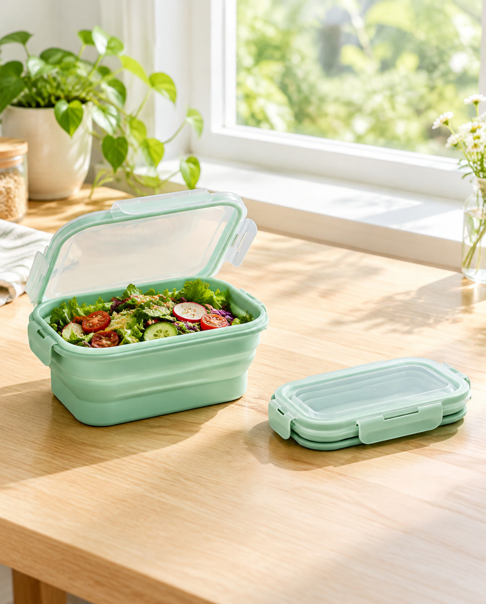

예시 상품
접이식 실리콘 도시락통
다 먹고 나면 납작하게 접어 가방에 쏙. 출근·등산·캠핑용 도시락통.
19,900원예시 가격
- 펼치면 약 800ml, 접으면 높이 약 3cm(예시 규격)
- 투명 뚜껑 + 네 방향 잠금 고리
- 색상: 민트 한 가지
- 구성: 도시락통 1개(뚜껑 포함)
3만 원 이상 무료 배송(예시)
상품 정보
| 상품명 | 접이식 실리콘 도시락통(예시 상품) |
|---|---|
| 용량 | 약 800ml(예시) |
| 크기 | 펼친 상태 가로 약 19cm × 세로 약 13cm × 높이 약 7cm, 접은 높이 약 3cm(예시) |
| 소재 | 몸통 실리콘, 뚜껑 플라스틱(예시) |
| 판매처 | 예시 스토어(지어낸 판매처) |
배송·교환
| 배송 | 결제 다음 날 출고, 1~3일 안에 도착(예시) |
|---|---|
| 교환·반품 | 받은 날부터 7일 안에 신청(예시) |
| 문의 | 010-0000-0000(예시 번호) |
자주 묻는 질문
| 접었다 펴도 괜찮나요? | 접고 펴서 쓰도록 만든 예시 상품입니다(실제 내구성 시험 수치는 없음). |
|---|---|
| 국물 음식도 되나요? | 이 예시 페이지는 국물 사용 여부를 안내하지 않습니다. |